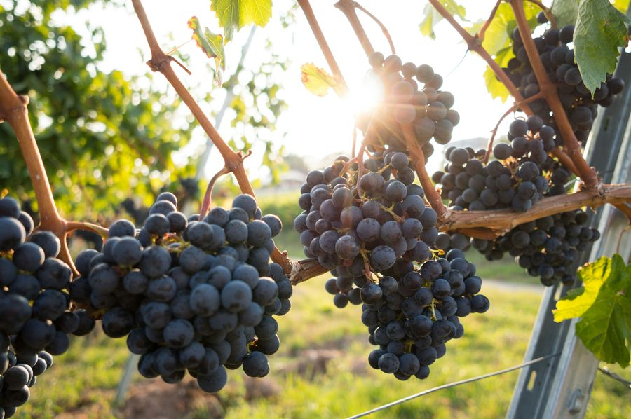
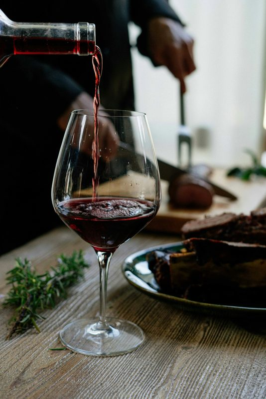
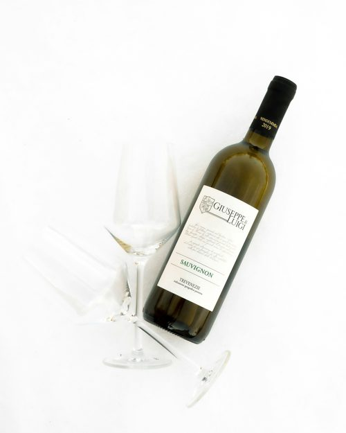
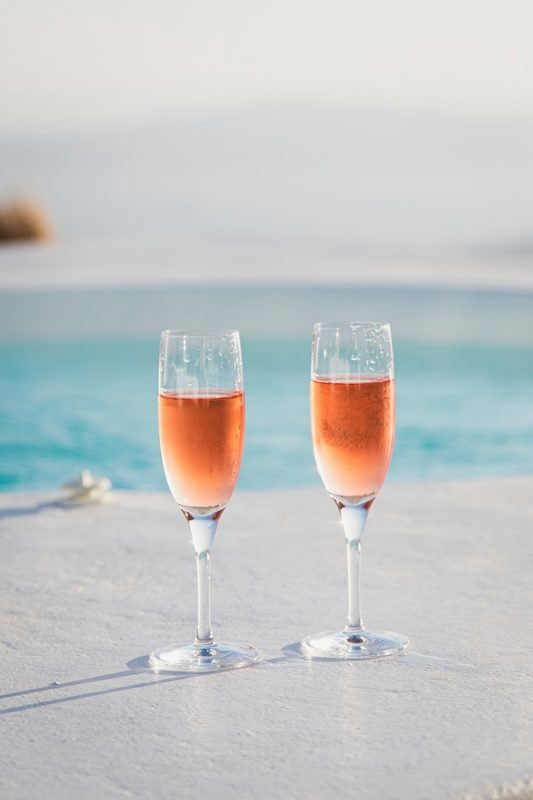
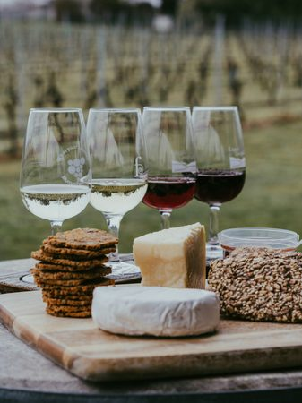

Est. 1987 — Suttons Bay, Michigan
Hand-crafted wines from the shores of Grand Traverse Bay
Explore Our WinesOur Story
Nestled along the western shore of Michigan's Leelanau Peninsula, Suttons Bay Cellars has been crafting exceptional wines since 1987. Our vineyards benefit from the moderating influence of Grand Traverse Bay, producing wines of remarkable character and depth.

Philosophy
Every bottle from Suttons Bay Cellars begins in our estate vineyards, where our team tends the vines by hand through Michigan's distinct seasons. We believe that exceptional wine is made in the vineyard long before it reaches the cellar.
Our winemaking philosophy is simple: intervene as little as possible, and let the character of our unique terroir speak for itself.
View Our Wines
Signature Wines
Our estate Chardonnay has become the hallmark of Suttons Bay Cellars. Fermented in French oak and aged sur lies for twelve months, it expresses the cool-climate elegance that makes Michigan wine country so special.
Notes of golden apple, toasted brioche, and a long mineral finish that speaks directly of the limestone soils beneath our vines.
Book a TastingOur Collection
Small-batch wines crafted from estate and locally sourced grapes

Rose
Delicate salmon pink with notes of fresh strawberry, watermelon, and a crisp dry finish. Perfect for warm Michigan summers.
$28 / bottle
Red Blend
Bold and structured with dark cherry, cedar, and earthy undertones. Aged 18 months in French oak barrels.
$48 / bottle
White
Our flagship white. Golden apple, toasted brioche, and a long mineral finish. Fermented in French oak for 12 months.
$36 / bottle

Tasting Room
Join us in our tasting room overlooking the vineyard. Our knowledgeable staff will guide you through a curated flight of our current releases, paired with local artisan cheeses and accompaniments.
Plan Your Visit
Located in the heart of Michigan wine country, we are just minutes from the charming village of Suttons Bay on the Leelanau Peninsula. Open year-round with extended hours during summer and fall harvest season.
1234 Bay Shore Drive
Suttons Bay, MI 49682
Mon-Fri: 11am - 6pm
Sat-Sun: 10am - 7pm
(231) 555-0100
hello@suttonsbay.com